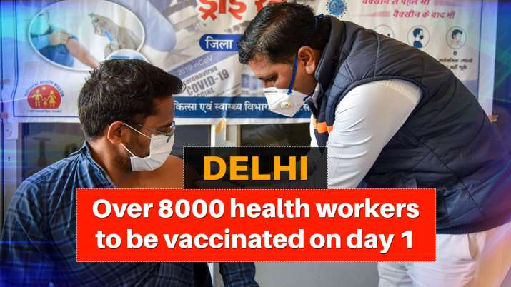
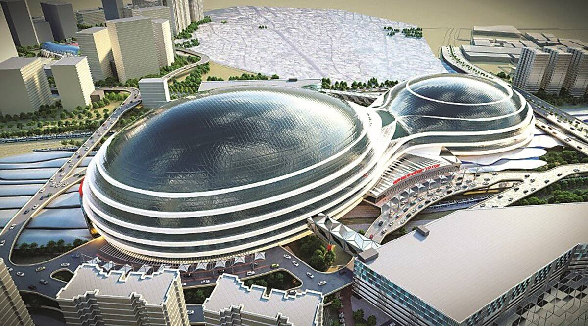
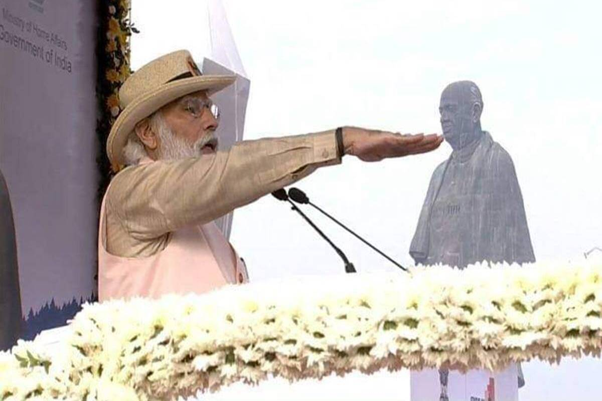
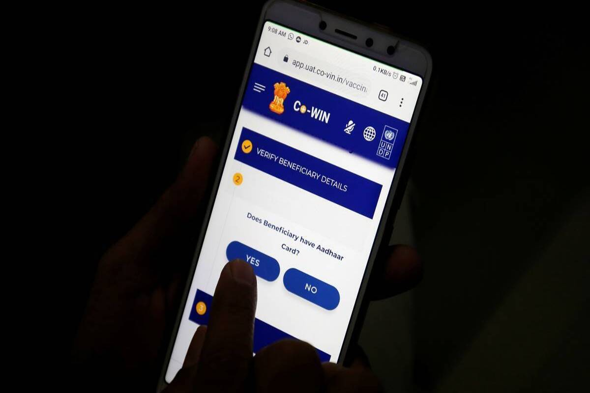

COVID-19 vaccination at 81 locations in Delhi for 4 days every week

Delhi Chief Minister Arvind Kejriwal on Thursday announced that COVID-19 vaccination will be conducted at
81 centre across the national capital on January 16. He added that the number of
centres will be increased to 175 in a few days andthen to 1000 centres across Delhi.
"Vaccination will begin with 81 centres, it will then be increased to 175 in a few days and then to 1
000 centres across Delhi," said Kejriwal.
As many as 100 people will be vaccinated at each of these locations per day as per the guidelines released
by the Centre, Arvind Kejriwal announced while addressing a virtual press conference. Vaccination will be done
on four days a week: Monday, Tuesday, Thursday & Saturday, he added.
$680 million project afoot to redevelop New Delhi station, Railways woos global investors
The work for the redevelopment of New Delhi railway station is in full swing with the Railway Land Development
Authority organising virtual roadshows for global stakeholders to engage them in various aspects of the project.
Infrastructure majors such as Adani, GMR, JKB Infra, France’s SNCF, Arabian Construction Company and Anchorage had
taken part in the project’s pre-bid meeting held in September 2020. As per the estimate by Railways,
the project is going to involve a $680 million investment and is slated to be completed in four years after the
work is awarded.

The roadshows are being held between January 14 and 19 and prospective investors and developers from various
countries and cities such as Singapore, Australia, Dubai and Spain will be engaged in discussions about the project
concept and the proposed transaction structure with potential bidders.
PM Narendra Modi to flag off trains to Statue of Unity from Delhi, Mumbai, Ahmedabad, key locations

Indian Railways Trains to Statue of Unity from Ahmedabad, Delhi, Mumbai: People from Delhi can board the Indian
Railways train from Hazrat Nizamuddin railway station (NZM).
In Mumbai, passengers can board the Indian Railways train to the Statue of Unity from Dadar railway station (DDR).
Indian Railways passengers from across India can now travel to the Statue of Unity as Prime Minister Narendra
Modi will be flagging off as many as eight trains to the world’s tallest statue located in Gujarat on Sunday.
People can now board trains from Delhi, Mumbai, Chennai, Ahmedabad, Varanasi, Uttar Pradesh’s Pratapgarh, and
Madhya Pradesh’s Rewa. Apart from flagging off trains, PM Modi will be inaugurating several projects on the same
day.
Covid vaccination in India: Can you download CoWIN and self-register for vaccine dose?

India started its Covid-19 vaccination drive on Saturday with healthcare workers getting vaccinated in the first
phase. More than three crore healthcare and frontline workers will be immunized during the first phase of Covid-19
vaccination drive and the technology
partner that will support the exercise at the digital front is the Covid Vaccine Intelligence Network or Co-WIN
application.
The software will monitor the inoculation drive and track the beneficiaries of the vaccination.
It will facilitate real-time information about vaccine storage temperature, stocks etc.
But the Co-WIN app is not available on either Android or Apple app stores to download which means one cannot
get registered for the vaccine shot until further announcement.